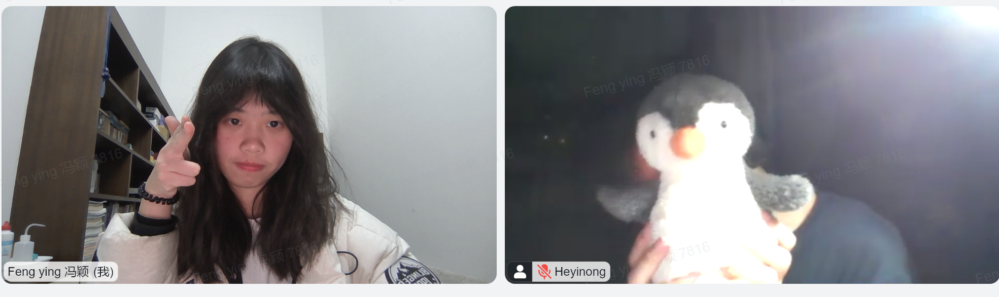
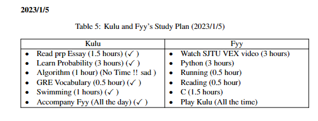
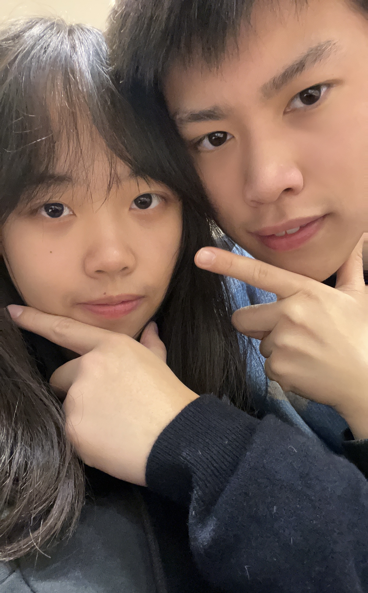

The Story Continues
Kulu loves Fyy very much, and today Kulu and Fyy had a happy day together. Let’s see what Kulu and Fyy did today !
Sweet Beginning
Kulu opened his eyes, and then he saw Fyy’s messages. It was greatest joy to see Fyy’s messages at the beginning of a day! The whole day will be lucky and happy for kulu.
Kulu and Fyy started their video chat on wechat. Kulu brushed his teech, and had breakfast. Meanwhile, Fyy showed Kulu around her home. Kulu saw beautiful gardens and houses. The scenery was so beautiful, Kulu was happy that Fyy lived in such a beautiful environment. Some dogs barked at Fyy, that’s silly, Kulu’s brave Fyy wasn’t afraid of them at all ! Fyy loves obedient little puppy like Handy. Fyy will play with Handy after she came back to Shanghai!
It was a pity that the stupid Kulu forgot to take a picture to record the happy moment. Thankfully, Kulu remembered to take a lot of photos later for his most lovely and most beautiful Fyy !
Kulu and Fyy Studied Together
Kulu and Fyy studied really hard today! Kulu read a thesis, and read a lot of mathematics, he also learned more about hexo blog.
Kulu remembered that he would help Fyy study linear algebra to prepare for discrete math.
Kulu and Fyy took pictures together at the end of the day. Fyy attempted to shoot at Kulu, Kulu was afraid and let their child Kiki shield him.

Kulu and Fyy wrote their Study Plan Together
Kulu and Fyy studied together! Kulu was really inclined to rest lazily at home during winter vacation, so he wrote a study plan, and Fyy also wrote hers to accompany Kulu.

Kulu didn’t finish his study plan today, because Kulu sleeped too much. Nevertheless, Kulu learned a lot today and he was happy. Fyy didn’t write checkmark for her plan, but Kulu knew that Fyy was busy all day, and had spent a lot of time studying hard, that’s also one of the reasons why Kulu loved Fyy so much ! Fyy readed 《摆渡人》today, and learned to write markdown today, below will see what Fyy wrote by markdown today.
Fyy Wrote Milestones of the Romantic Story
The romantic story between Kulu and Fyy was not always smooth sometimes, sometimes they were inharmonious. Most of the cases, it was Kulu to be blame for his losing control of his temper, while Fyy was always the one to be hurt. Kulu had already sworn to Fyy that he would try hard to give Fyy a promising and happy future. Later, Kulu and Fyy became more and more tacit with each other, they accompanied each other and got more and more familiar with each other. Kulu love Fyy !
Kulu and Fyy had a lot of other milestones, Fyy was too tired today, so the remaining milestones will be left to Kulu! Kulu won’t let the memories leak!
Fyy also wrote down her wishlist ! Though Fyy and Kulu didn’t have a long period relationship till now, they had already experienced a lot together, seeing the checkmarks, all the memories slipped through Kulu’s mind.
After Kulu and Fyy meet again, let’s fullfill all the wishes!
Smart Fyy even drew a milestone graph for Kulu. The only mistake with this graph was that the time axis ended at 2023/4/23. That was totally wrong ！ Kulu will accompany Fyy forever !
Kulu Sent 520 Hearts to Fyy
Kulu was so worried that Fyy couldn’t see the hearts, so he called Fyy to see the hearts.
The End of the Day
Kulu happily told Fyy that Kulu’s parents allowed Kulu to travel outside freely. That was really a good news ! Whenever Fyy was free to play outside, Kulu can reach Fyy and stay with her !
Kulu will elect courses for Fyy tomorrow, so Kulu should get up early tomorrow to prepare for it carefully!
Kulu and Fyy said “Good Night” to each other and the happy day came to an end. Kulu loves you, Fyy !
